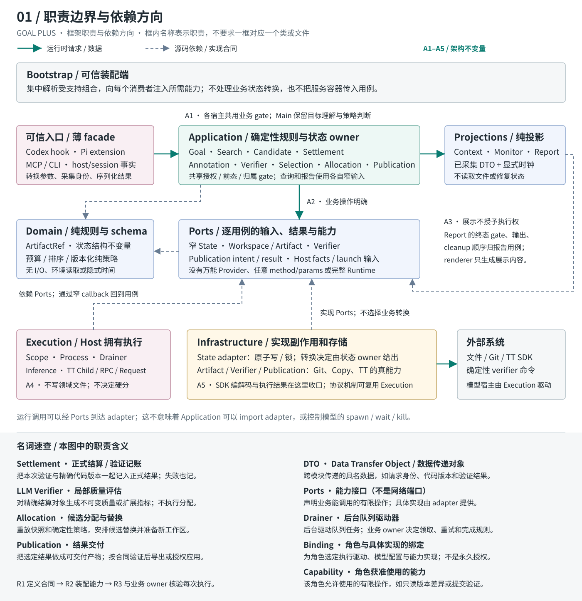
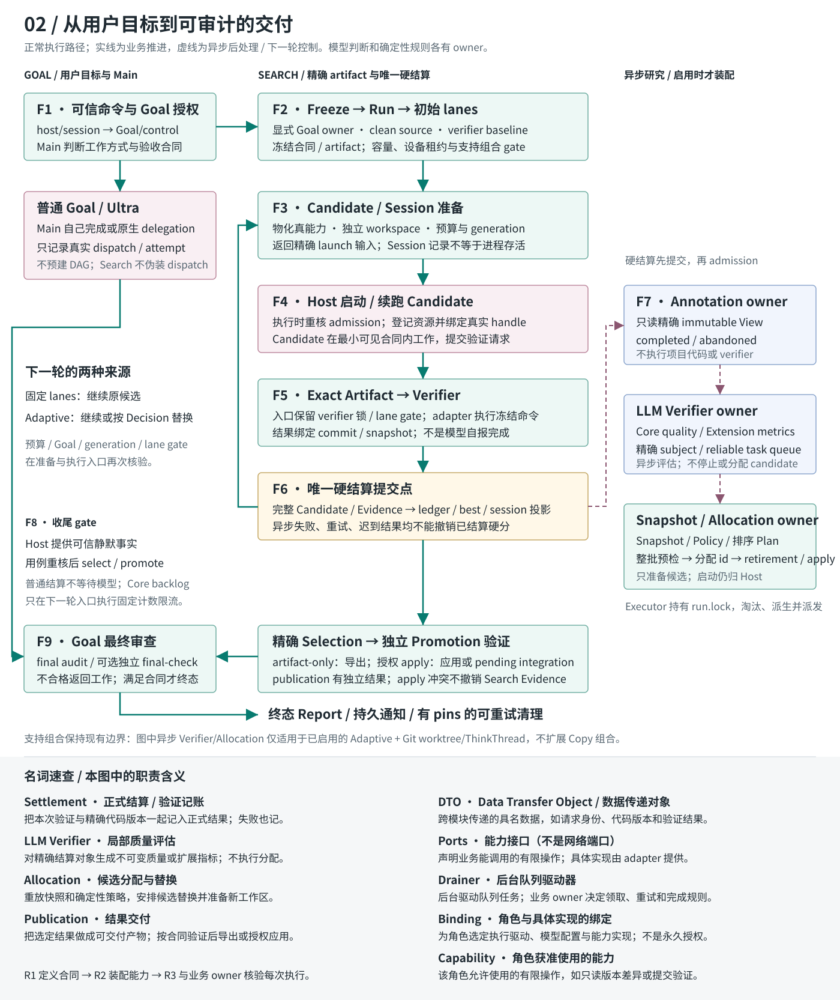
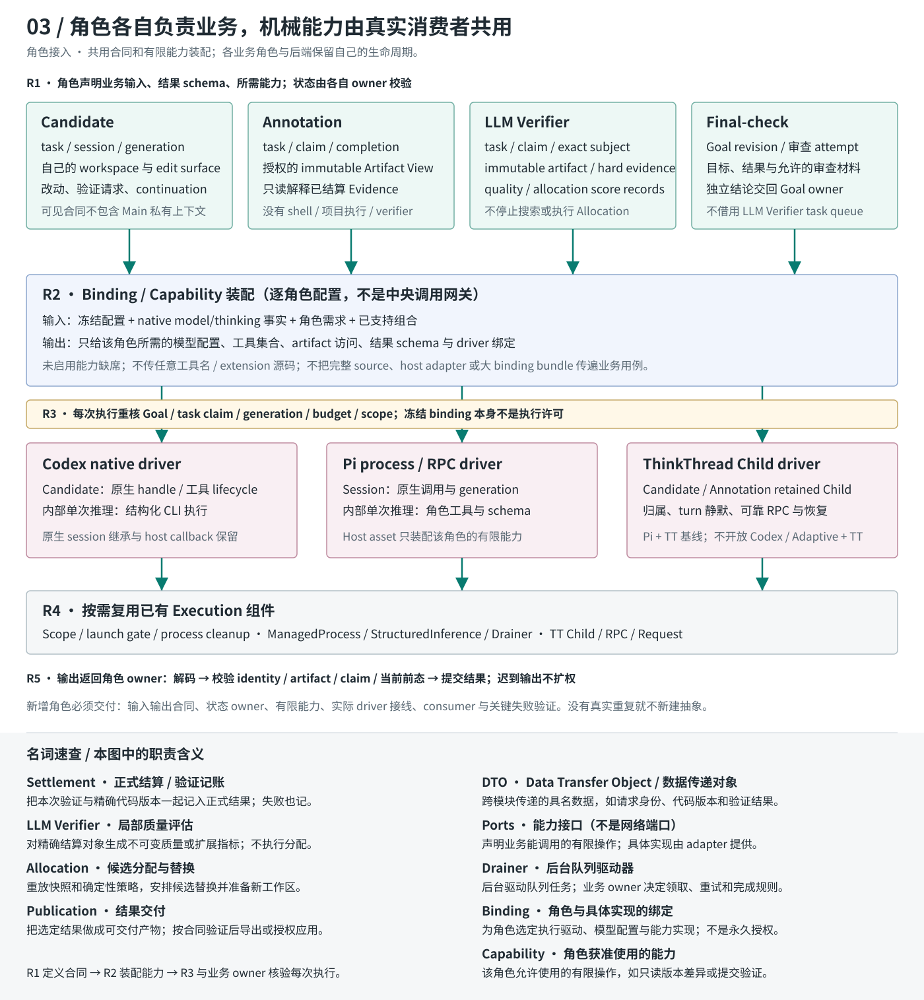
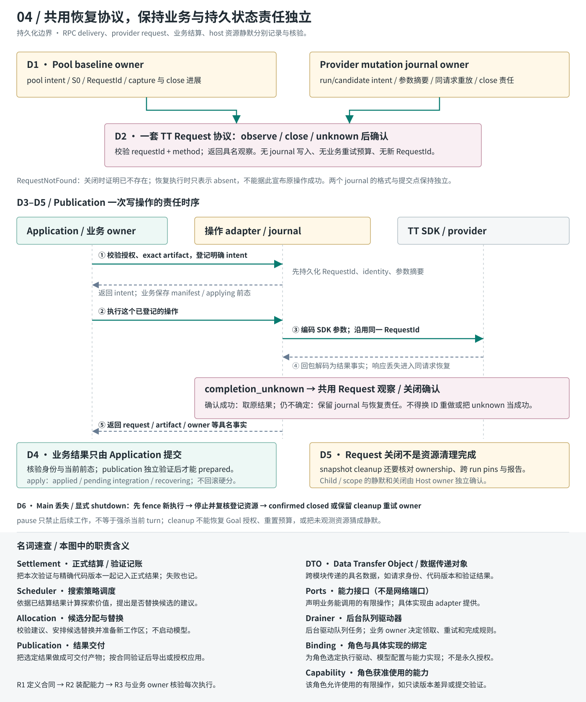

职责、能力与持久化边界
Goal Plus 架构
01 / 职责边界与依赖方向

02 / 从用户目标到可审计的交付

图底部合并展示交付责任，不代表通知、报告与清理同时触发；它们分别保留自己的终态 gate、pins 和持久化顺序。
03 / 角色合同、有限能力与执行驱动

04 / 独立 journal 与共用恢复协议

快照物化与 source apply 分别拥有 intent。Request 关闭、snapshot 可清理、Child 静默和 Goal 获准恢复是不同结论。